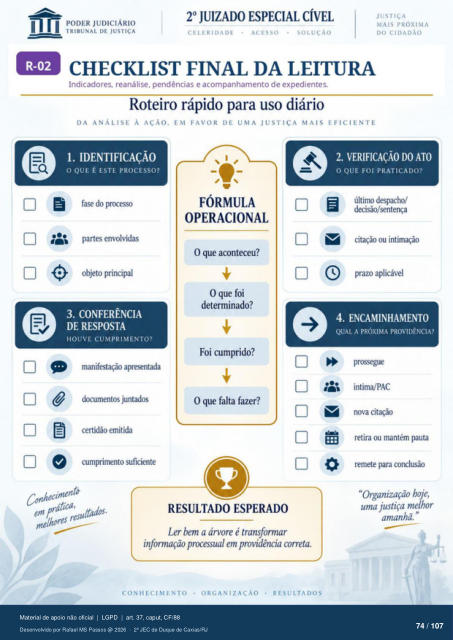

Leitura automática da imagem — revisar
Transcrição automática em português, ainda não revisada. Confira grafia, prazos e termos jurídicos na imagem e no PDF antes de utilizar.
CHECKLIST FINAL DA LEITURA
Indicadores, reanálise, pendências e acompanhamento de expedientes. Roteiro rápido para uso diário
DA ANÁLISE À AÇÃO. EM FAVOR DE UMA JUSTIÇA MAIS EFICIENTE
1. IDENTIFICAÇÃO
O QUE É ESTE PROCESSO?
fase do partes envolvidas
objeto principal
3. CONFERÊNCIA
DE RESPOSTA
HOUVE CUMPRIMENTO?
manifestação apresentada dcxumentos juntados
certidão emitida cumvimento suficiente
FÓRMULA
OPERACIONAL
O que aconteceu? Oque foi
determinado? Foi cumprido?
O que falta fazer?
RESULTADO ESPERADO
Ler Irm a árvore é transformar informação pnmsual em providência correta.
CONHECIMENTO
ORGANIZAÇÃO
RESULTADOS
2. VERIFICAÇÃO DO ATO
O QUE FOI PRATICADO?
último despacho/ ã
decisão/sentença citação ou intimação
o prazo aplicável
4. ENCAMINHAMENTO
QUAL A PRÓXIMA PROVIDÊNCIA?
prcsegue intima/PAC
nova citação retira ou mantém pauta
remete para conclusão "Organização hoje,
uma justiça melhor
Ver também o infográfico original (página 74)
